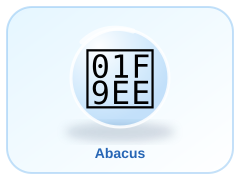
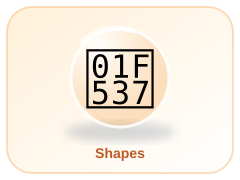
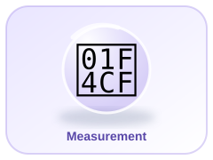

➕
Addition
Add numbers together. Example: 7 + 5 = 12.
Count • Calculate • Explore • Grow



Add numbers together. Example: 7 + 5 = 12.
Take one number away. Example: 12 − 4 = 8.
Multiply by adding equal groups. Example: 3 × 4 = 12.
Share equally. Example: 12 ÷ 3 = 4.
A fraction shows part of a whole. One half is written 1/2.
A triangle has 3 sides; a square has 4 equal sides.
There are 60 minutes in one hour and 24 hours in one day.
We measure length, mass and capacity using suitable units.
Work through the full question bank. This is not limited to five questions. Read each question, choose an answer, and continue.
Score: 0